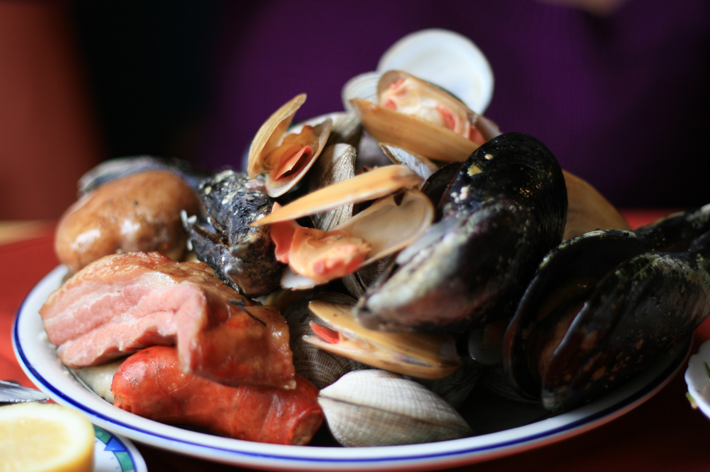
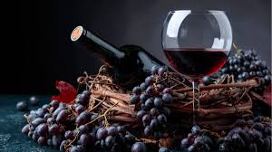

ᑕᕼIᒪᕮ
Roupas típicas
Uma das vestimentas tradicionais mais representativas no chile é o Poncho, amplamente utilizado em diversas regiões, princialmente nas áreas rurais e andinas. Confeccionado artesalnamente em lã de ovelha ou de alpaca, o poncho é uma peça funcional, projetada para proteger contra o frio, o vento, e variações, especialmente nos Andes. Além de sua utilidade no dia a dia, tambem possui forte valor cultural, apresentando padrões e cores que refletem identidades regionais e tradições indígenas, como as dos Mapuches. Ao longo do tempo, o poncho tornou-se um símbolo da cultura chilena, sendo utilizado em festas, tradições e até como elemento de expressão cultural e histórica. Já foi referenciado em filmes como "O estranho sem nome".



Comidas típicas
A culinária chilena reflete diretamente a diversidade geográfica do país, combinando influências indígenas, especialmente dos Mapuches, com tradições trazidas pelos colonizadores europeus. Ao longo do território, a alimentação varia conforme o ambiente: no litoral, o destaque fica para frutos do mar, enquanto nas regiões centrais predominam produtos agrícolas e, no sul, alimentos mais calóricos, adequados ao frio. Entre os pratos típicos mais conhecidos está a Empanada chilena , geralmente recheada com carne, cebola, ovos e azeitonas. Já o Curanto, mais comum no sul, é uma preparação coletiva que mistura carnes, frutos do mar e vegetais, cozidos . Na alimentação cotidiana, o pão ocupa papel central (o Chile é os maiores consumidores de pão do mundo) acompanhado por ingredientes simples como abacate, queijos e carnes. Além disso, bebidas como os vinhos chilenos possuem reconhecimento internacional, graças as condições climáticas favoráveis à viticultura. Assim, a gastronomia chilena se caracteriza pela combinação entre recursos naturais abundantes e heranças culturais diversas, resultando em uma culinária rica, variada e profundamente conectada ao território.